Based in Kebumen, Jawa Tengah
AVAILABLE FOR PROJECTS
Graphic Designer & Web Developer
Hi! I am Dana Riyadi
Saat ini berfokus sebagai Web Developer & Graphic Designer, mengembangkan platform web serta menghasilkan karya desain visual yang modern, kreatif, dan profesional.
Mengutamakan kualitas, ketelitian, dan inovasi dalam setiap proses untuk menghadirkan solusi digital yang bernilai.
Pendidikan
Program Studi S1 Ilmu Komputer, Universitas Putra Bangsa, Kebumen, Jawa Tengah.
Skills & Tools Utama
Experience
Pengalaman yang membentuk arah kerja saya
Dari magang, studi independen, hingga organisasi kampus, pengalaman saya banyak pada bidang pengembangan website, desain publikasi visual, dan pengelolaan media digital.
Web Developer

Universitas Putra Bangsa
- Membangun website LP3M, Fakultas Ekonomi & Bisnis, dan Fakultas Sains & Teknologi (WordPress, Next.js)
- Merancang sistem penilaian kinerja karyawan
- Mengelola laboratorium komputer
Web Developer


PT Maleo Edukasi Teknologi (Kampus Merdeka)
- Menjalani 840 jam pelatihan pengembangan platform edukasi berbasis Django
- Membangun platform daycare full-stack: database, autentikasi, otorisasi & integrasi API
- Merancang front-end responsif, CMS konten pembelajaran, serta analisis & visualisasi data
Kepala Departemen Media dan Informasi


Badan Eksekutif Mahasiswa, Universitas Putra Bangsa
- Mengelola website & Instagram BEM UPB
- Memproduksi seluruh konten visual (Canva, CapCut, CorelDraw)
- Mengoordinasikan 3 UKM: Fotografi & Videografi, Jurnalistik, Pik-Ma
Divisi Publikasi, Desain & Dokumentasi

UKM English Club, Universitas Putra Bangsa
- Mengelola akun Instagram organisasi
- Memproduksi media publikasi menggunakan Canva & CapCut
- Mendokumentasikan kegiatan melalui foto & video
Portofolio
Karya pilihan terbaik
Beberapa proyek pilihan di bidang web development, desain grafis, dan video.
Web Development
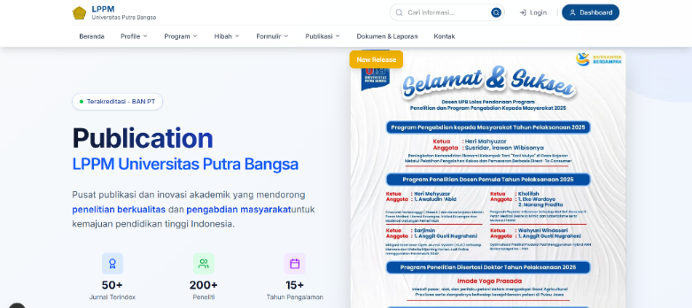
Next.js SiteWeb LP3M UPB
Website LP3M Universitas Putra Bangsa yang dibangun ulang menggunakan Next.js dan MySQL. Hadir dengan tampilan yang lebih modern dan performa yang lebih optimal dibanding versi WordPress.
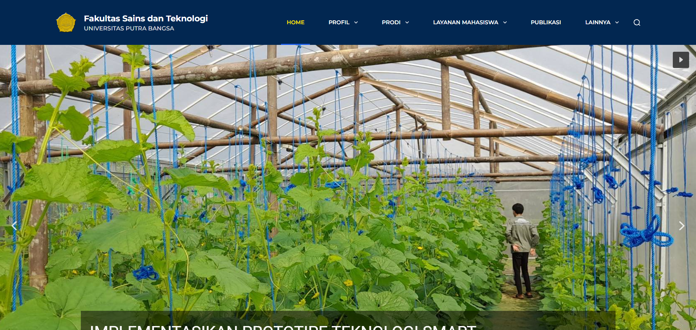
WordPress Site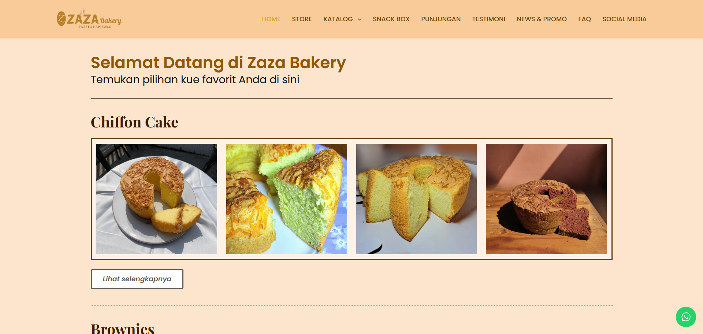
WordPress SiteWeb Company Profile Zaza Bakery
Website company profile toko roti Zaza Bakery berbasis WordPress. Menampilkan katalog produk, fitur pemesanan via WhatsApp, testimoni pelanggan, FAQ, dan tautan media sosial.
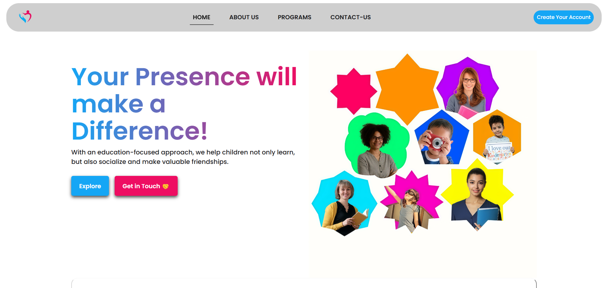
Django AppWeb Pendaftaran Daycare
Aplikasi web pendaftaran daycare dibangun dengan Django (Python), HTML, CSS, dan SQLite. Fitur pendaftaran anak secara online, pemantauan perkembangan anak, dan informasi parenting.
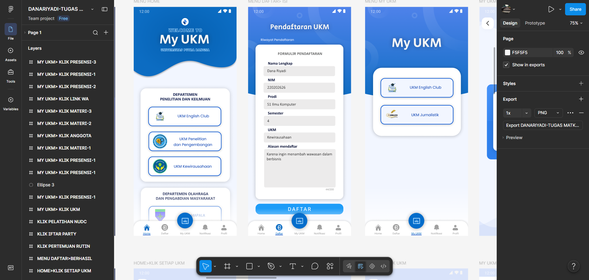
UI/UX DesignUI/UX Aplikasi My UKM
Rancangan UI/UX aplikasi My UKM untuk pengelolaan Unit Kegiatan Mahasiswa secara digital. Memudahkan pendaftaran anggota dan pencatatan presensi kegiatan UKM melalui aplikasi mobile.
Graphic Design
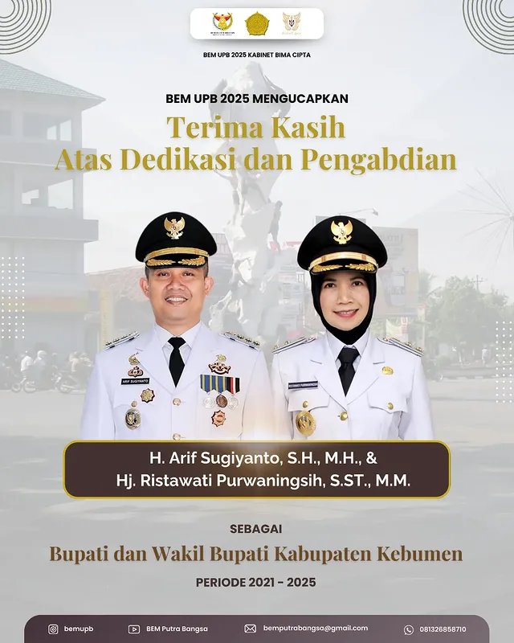

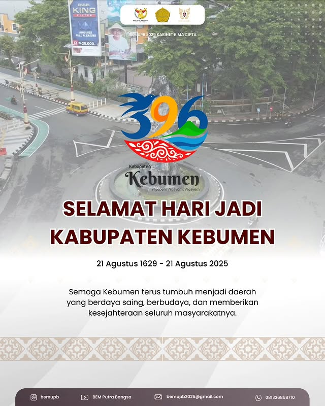

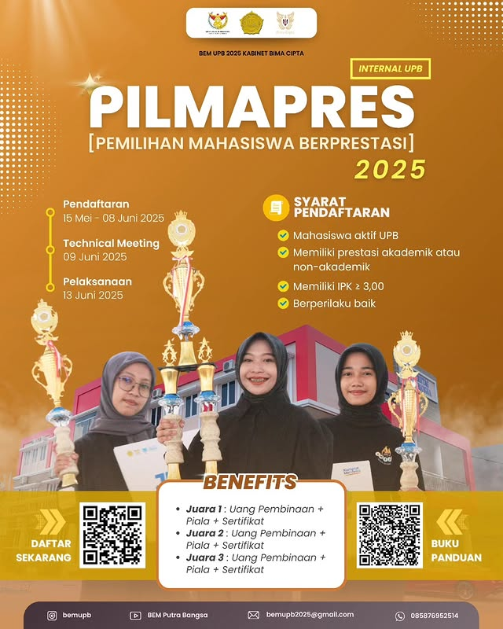
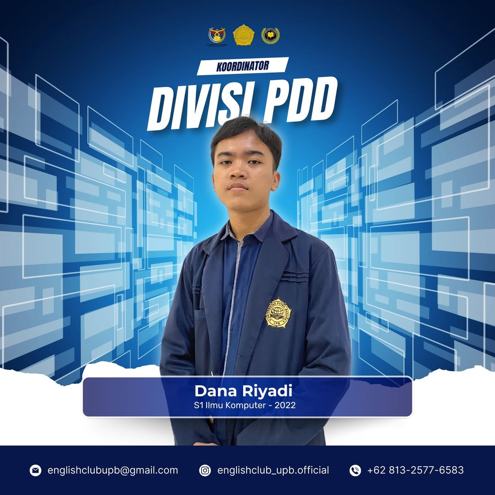
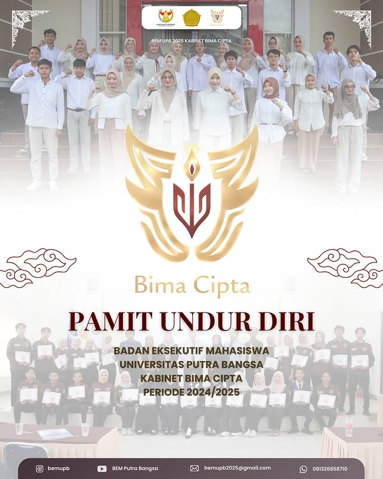
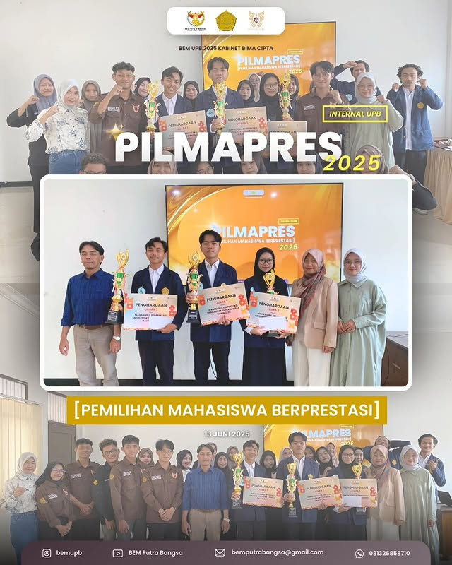
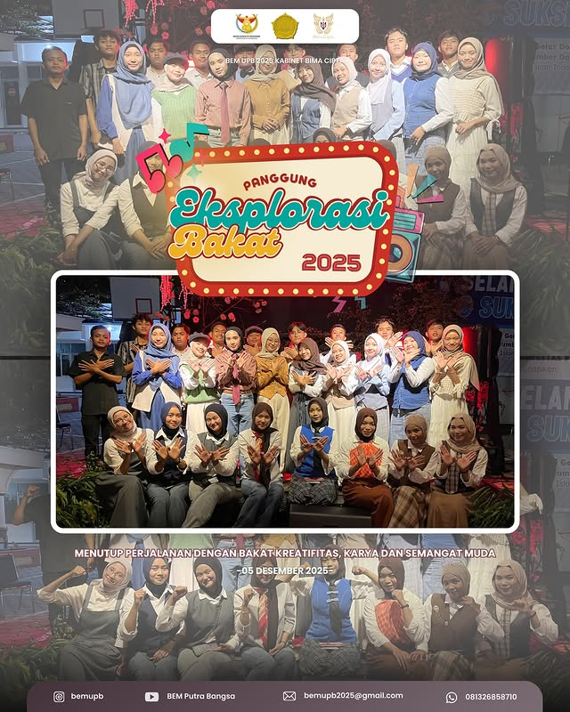
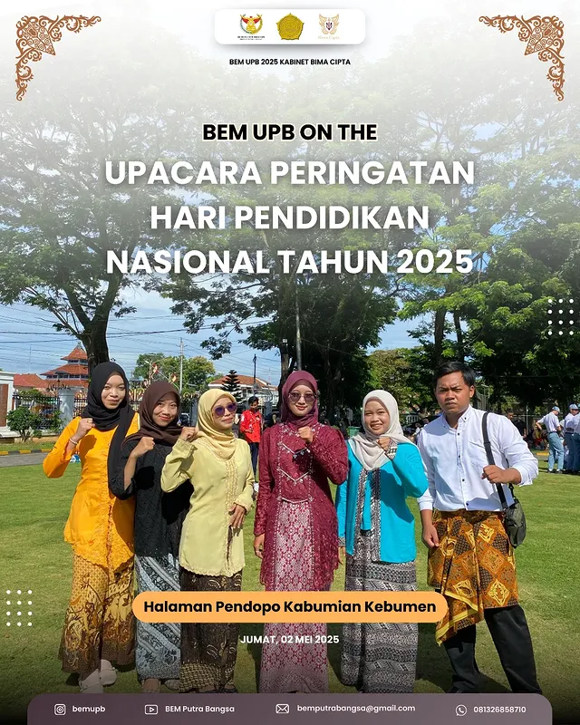
Video
 YouTube
YouTube
Video Profile BEM UPB 2025
Video profile resmi BEM Universitas Putra Bangsa 2025 – Kabinet Bima Cita. Menampilkan visi, misi, dan semangat pengabdian kabinet dalam satu karya sinematik.
Tonton di YouTube YouTube
YouTube
Papermob Prospek UPB 2025
Dokumentasi aksi papermob spektakuler dalam rangkaian kegiatan Prospek UPB 2025. Ratusan mahasiswa baru membentuk formasi visual yang memukau sebagai simbol kebersamaan dan semangat kampus.
Tonton di YouTube
Contact
Mari Berkolaborasi
Terbuka untuk diskusi proyek website, desain visual, maupun kebutuhan kolaborasi digital lainnya.
Profil Singkat
- Lulusan S1 Ilmu Komputer, Universitas Putra Bangsa.
- Pengalaman Magang & Studi Independen di bidang Web Development.
- Terbiasa memproduksi konten visual, desain promosi & media digital.
- Fokus pada WordPress, Next.js, Django, UI/UX & Graphic Design.